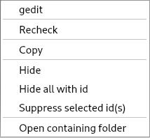

Create a new project:
In the Paths and Defines tab, it is recommended that you import your project file at the top.
In the Types and Functions tab, try to activate all 3rd party libraries you use (windows, posix, ...).
In the Analysis tab, leave the default settings to start with.
In the Warnings options tab, leave the default settings to start with.
In the Addons tab, leave the default settings to start with.
When the project file has been created, the analysis will start automatically.
While analysis is performed in the background, you can investigate the results.
In the toolbar you choose what types of warnings you want to see (error/warning/style/performance/portability/information).
All warnings are shown in a list. If you select a warning in the list, then details about that warning is shown.
If you right click on warning(s) then you get a context menu.

The difference of "Hide" and "Suppress" is that suppressions are saved in the project file. The suppressed warnings will not be shown again unless you remove the suppression. When you hide a warning then they will be temporarily hidden; the next time you analyze your code these warnings will be shown again.